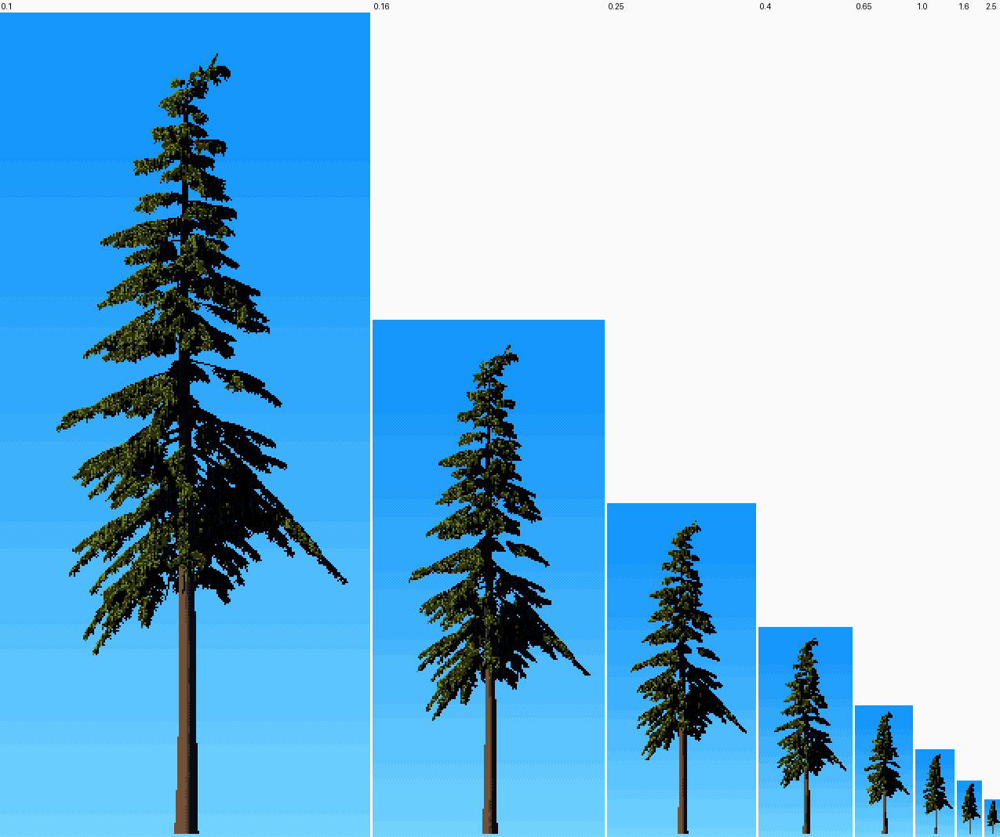
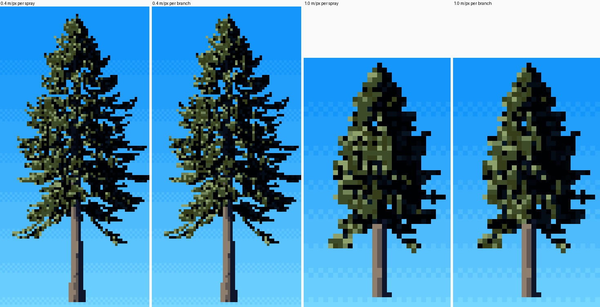
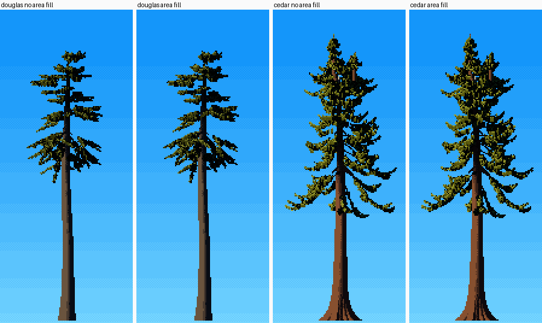
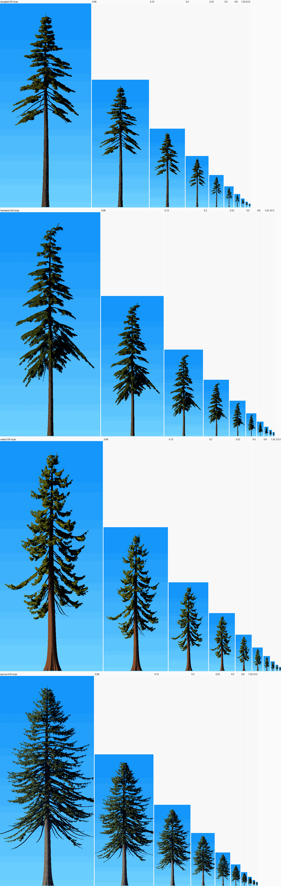

4. One tree at every distance, without pops
Back to the tutorials. Code: conifer.scale_P, paint.quantize, paint.rasterize and foliage_fast.foliage, in ~/work/pixelart-studies/elements/conifers/.

A mature western hemlock from 0.1 to 2.5 m/px, native pixels shown at 2×. The critic checked consecutive pairs in the final zoom strips and found no pops. Each species keeps its silhouette down to 0.8 m/px.
The rule: one tree, many samplings
The geometry is grown in metres, once, the same at every scale. Only three things depend on metres per pixel (mpp), and each is a continuous function of it:
- Point spacing is always about half a pixel (
step = max(0.45 * mpp / detail, 0.015)), and element anchors are at least half a pixel apart (spacing = max(sp.spacing, 0.5 * mpp)). A crown is solid where it's dense at every scale, and never oversampled into mush. - Marks are
mark_m / mpppixels long, clipped to 1–4 px (paint.rasterize). Near, a spray is a stroke; far, it's a dot. - The coherent unit of texture grows with distance: the pixel, then the spray, then the branch. This is the handoff that matters most.
Nothing is switched by an if scale == .... Every branch like that is a place where the tree can pop.
The coherence handoff
The mixture of how-to 1 draws each pixel from random fields r, r2. Replace those draws with a hash of the element id, and a whole spray takes one draw: it reads as one mark instead of static. Further away, hash the branch id instead, and a whole branch takes one draw: its top edge becomes one lit run. From paint.quantize:
eid = G["eid"]
if P.get("elem_coh", 0.75) > 0:
pb = P.get("branch_coh", 0.0)
cid = np.where(rng.random((Hh, W)) < pb, G["bid"] * 7919 + 1000003, eid) # branch or spray
he = ((cid * 2654435761) % 1000003) / 1000003.0
he2 = ((cid * 40503 + 12345) % 999983) / 999983.0
use = (rng.random((Hh, W)) < P.get("elem_coh", 0.75)) & (eid >= 0)
r = np.where(use, he, r); r2 = np.where(use, he2, r2)
The fractions ramp with mpp (conifer.scale_P):
P["elem_coh"] = float(np.clip(0.35 + 0.4 * (mpp - 0.1) / 0.3, 0.35, 0.75))
P["branch_coh"] = float(np.clip((mpp - 0.08) / 0.4, 0.0, 0.85))
At near scale most of the texture is per-pixel, with vertical grain (how-to 2). Coherence is kept low there on purpose: at 0.75 the sprays became flat blotches of one colour. By 0.5 m/px, 85% of pixels share their branch's draw.

Sitka spruce, mature, at 0.4 and 1.0 m/px: per-spray draws (left of each pair) against per-branch draws (right). The per-branch version has longer lit runs along the tiers and cleaner dark between them. It's a modest effect, and it does what "one lit flank plus tier-edge ticks" asks for.
Two failures at opposite ends
At both ends of the ladder, a spray turns back into a stick.
- Near (2 cm/px): sprays drawn as 1-px skeletons are wire models. The fix is the needle fill (how-to 3).
- Far (≥ 0.25 m/px): sprays narrower than a pixel collapse back to their skeletons. My old trees read as flags on poles:

The coarse-scale area fill (foliage_fast._fill) scatters points across a spray's width whenever the spray is sub-pixel:
if step > 2 * sp.needle:
want = (~drawn) & (hwe > 0.5 * step) # hwe: the spray's half-width in metres
nf = np.where(want, np.minimum(6, (1.6 * hwe / step).astype(int)) + 1, 0)[e]
# ... each point gets nf copies spread uniformly across the spray's width, drooping at the sides
The honest part: in the final painter, switching the area fill off changes little:

The flags were cured mostly by larger elements for old trees (el 2.2) and wider crowns. I'd still keep the fill. It's what keeps a sub-pixel spray's area right when you change species parameters, and it costs nothing.
How to test for pops
Render the same tree at a geometric ladder of scales, at native pixels, bottom-aligned (sheets.sheet_F):
MPPS = [0.05, 0.08, 0.13, 0.2, 0.32, 0.5, 0.8, 1.25, 2.0, 3.2]
for m in MPPS:
Hp = int(Ht * 1.05 / m) + 4; Wp = max(10, int(Hp * 0.45)) # frame from the tree's own height
rgb, _ = conifer.tree(sp, "mature", seed=2, mpp=m, W=Wp, H=Hp)
Then look at each consecutive pair and ask whether the tree changed character or only size. Size the frames from the tree's height: my first ladder used a guessed 75/m and cropped every tree.

Parameters
step 0.45 px, anchor spacing ≥ 0.5 px, mark_m 0.25 m (1–4 px), elem_coh 0.35 → 0.75 and branch_coh 0 → 0.85 by mpp as above, vgrain 2.4 → 0 between 0.12 and 0.32 m/px. The value plan (lit_frac) is constant with scale, so the tree doesn't brighten or darken as it shrinks.
Limits
At 1–3 m/px the silhouette holds, but the lit pixels are few and scattered. Ferrari's far spires are crisper: a 1-px spire with alternating spur ticks. A designed far-LOD glyph might beat the sampling here. vox-trees' NOTES say the same about their spruce at region scale.